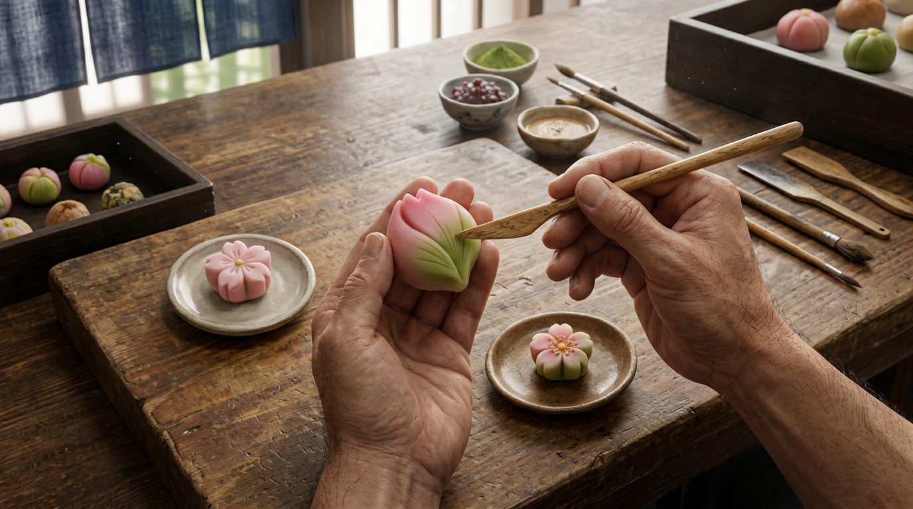

時の鐘のすぐ隣
川越のシンボルのそば。散策の途中に、気軽に立ち寄れる場所です。
時の鐘のとなりで、150年の甘いひととき。
川越・明治8年創業の和洋菓子店

明治8年（1875年）、初代・高柳金太郎が川越市幸町15-1で巾着袋の商いを始め、「福呂屋」と名付けました。
明治後期から大正にかけて、米穀店から仕入れた餅米で餅菓子・大福をつくる店へ。昭和初期には先代が生菓子を加え、戦時中の困難も地域の支えで乗り越え、和菓子屋として続いてきました。
戦後はさつまいもを使った芋菓子を考案。父の世代が洋菓子の修行を経て和洋の菓子を並べ、伝統に新しさを加えました。小江戸川越の観光ブームとともに、街の歴史や風情をお菓子に映してきました。
令和、5代目・鈴木貴恭がコロナ禍で店を大きくリニューアル。時の鐘の隣という場所で、チーズスフテラを軸にした和洋菓子店として、150年近い歴史を受け継いでいます。
観光の合間に、ちょっと甘いものを食べたい。
時の鐘のすぐ隣なので、散策の途中に立ち寄れます。テイクアウトでも、2階のイートインでも。
子ども連れや家族でも入りやすい店がいい。
2階にはテーブル席と小上がりがあり、小さなお子さま連れでも安心です。小上がりの窓から時の鐘が見えます。
人気のお菓子は、買えますか？
人気商品は早い時間に売り切れることがあります。お目当てがあるなら、午前中のご来店がおすすめです。
川越のシンボルのそば。散策の途中に、気軽に立ち寄れる場所です。
5代にわたり受け継がれてきた、約150年の歴史ある和洋菓子店です。
和菓子とチーズケーキなどの洋菓子が、ひとつの店に並びます。
テーブル席と小上がりがあり、ゆっくり過ごせる落ち着いた空間です。
小上がりの窓の目の前に、時の鐘。ここだけの眺めです。
気さくで温かい対応に、「もっと話してみたい」という声も届いています。

福呂屋の看板、チーズのお菓子。口コミでも人気で、早い時間に売り切れることもあります。

名前からして気になる、福呂屋ならではの最中。散策のお供や、お土産にどうぞ。
店内は真新しい雰囲気でした。陳列棚には、美味しそうなスイーツやスフレチーズケーキが並んでいました。普段は無くなることもあるそうなので、早目の来店がオススメかと思いました。
イートイン出来るようなので、今回はテイクアウトしましたが、次回は家族と来てみたいと思う２階のイートインスペースでした。テーブル席に小上がりもあり、小上がりの窓からは隣にある『時の鐘』が目の前に見えます。
オシャレなイートインスペースは、老若男女小さなお子さん連れでも大丈夫です。川越散策の際には、とてもオススメのお店です。
対応して頂いた女性(お母さん？)にも気さくに対応していただき、とても印象が良かったので、もっともっとお話してみたいと思う、優しい接客でした
夕方に訪問しましたが、ほとんどの商品が売り切れ。特に人気の「とのさまチーズスフテラ」は早めの時間に行かないと買えないようです。明治創業の老舗で、チーズケーキや和菓子が並ぶ店内は雰囲気も良く、次は午前中にリベンジしたいと思います。時の鐘のすぐそばで立ち寄りやすい立地です。
福呂屋では、こんなサービスを準備しています。
人気商品を電話でお取り置き。売り切れが心配な日も、安心して散策できます。
和菓子と洋菓子を少しずつ。川越の思い出を持ち帰れる、福呂屋のセットです。
店で買ったお菓子を手に、時の鐘まわりを歩く。おすすめの寄り道をご案内します。